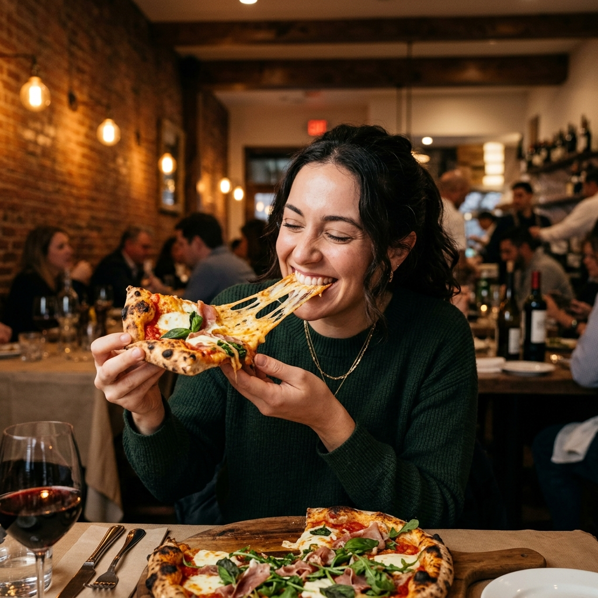
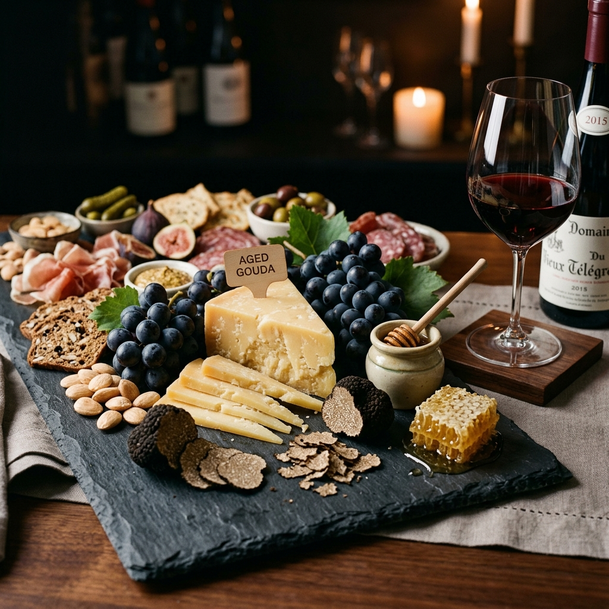

Bespoke Artisanal Cheese Services & Experiences
Elevating private gatherings, corporate celebrations, and epicurean journeys with Europe’s rarest masterwork cheeses, sommelier wine pairings, and bespoke grazing tables.

Our Premium Artisanal Services
Curated culinary solutions tailored for epicureans, private events, luxury venues, and corporate gifts.
 Artisanal
Artisanal
Artisan Cheese Selection
Direct access to rare matured wheels, micro-batch seasonal creameries, and AOP-certified European varieties delivered fresh to your door.
 Sommelier
Sommelier
Cheese & Wine Pairing
Harmonized pairing menus crafted by Master Sommeliers, matching vintage wines, champagnes, and ports with matured artisanal cheeses.

HandcraftedCustom Cheese Platters
Architectural charcuterie and cheese boards decorated with fresh organic figs, honeycomb, artisanal crackers, and candied nuts.
 Curated
Curated
Monthly Subscription
Exclusive monthly deliveries of rare, limited-run seasonal cheeses delivered straight to your home in insulated wooden crates.
 Masterclass
Masterclass
Private Cheese Tastings
Exclusive guided tasting workshops and masterclasses hosted by certified Master Cheesemakers at your private estate or venue.
 Event Catering
Event Catering
Corporate & Event Catering
Grand cheese towers, interactive live grazing tables, and luxury corporate catering installations for weddings, galas, and summits.
 Luxury Gift
Luxury Gift
Luxury Gift Hampers
Hand-assembled mahogany and wicker hampers featuring aged reserve wheels, vintage condiments, and gold-plated luxury cheese knives.
 Bulk Wholesale
Bulk Wholesale
Wholesale Supply &
B2B Distribution
Direct bulk supply contracts featuring bulk stacks of artisanal cheese wheels for Michelin-starred restaurants, hotels, and luxury venues.
The Artisanal Experience Journey
Five seamless steps from cave-side selection to an unforgettable tasting moment.
Select
Choose from custom platters, private tasting menus, or monthly subscriptions.
Curate
Our Master Cheesemakers hand-pick perfectly matured wheels at peak ripeness.
Package
Sealed in eco-luxury temperature-controlled wooden crates with gel coolant.
Deliver
Express white-glove courier delivery guaranteed fresh to your estate.
Enjoy
Savor rich flavor profiles with included pairing guides & sommelier tips for chesees.
Words from Gourmet Connoisseurs
Discover how Cheesoria elevates private dining, luxury galas, and corporate gifts.
"Cheesoria's cave-aged reserve wheels are the crown jewel of our tasting menu. The depth of flavor, perfect amino crystallization, and temperature-controlled delivery are unmatched in North America."
"The live grazing table Cheesoria created for our 300-guest gala was a masterpiece of culinary art. Their Master Sommelier's wine pairings had our guests raving all evening!"
"Our annual corporate gift hampers from Cheesoria have become legendary among our executive board members. The mahogany crate packaging and gold cutlery add such an opulent touch."
"The precision of their cheese and wine pairing flights is extraordinary. Every monthly subscription box feels like opening a subterranean vault of European gastronomy."
Frequently Asked Questions
Everything you need to know about our services, ordering, packaging, and events.